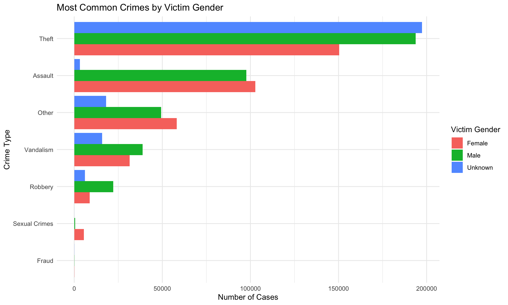
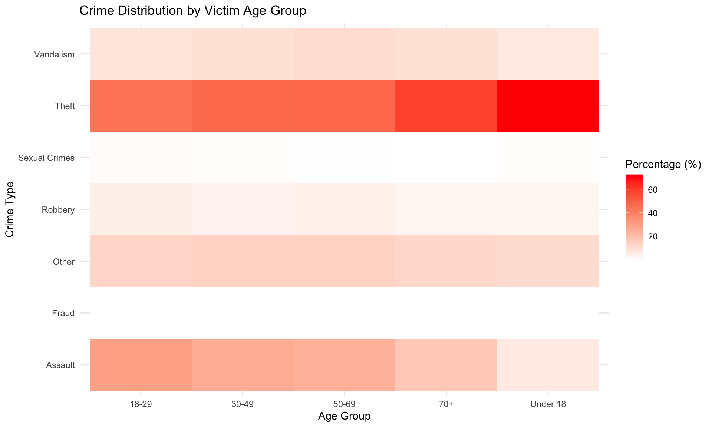
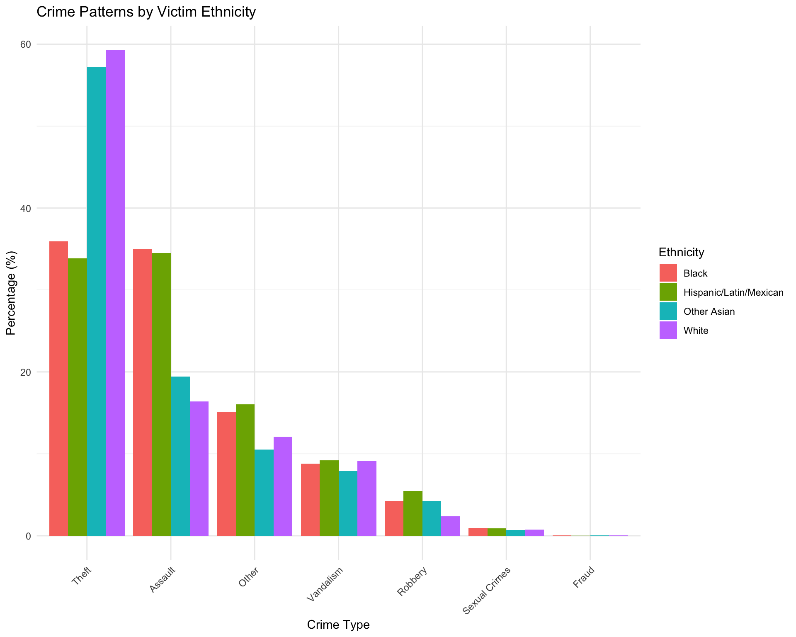
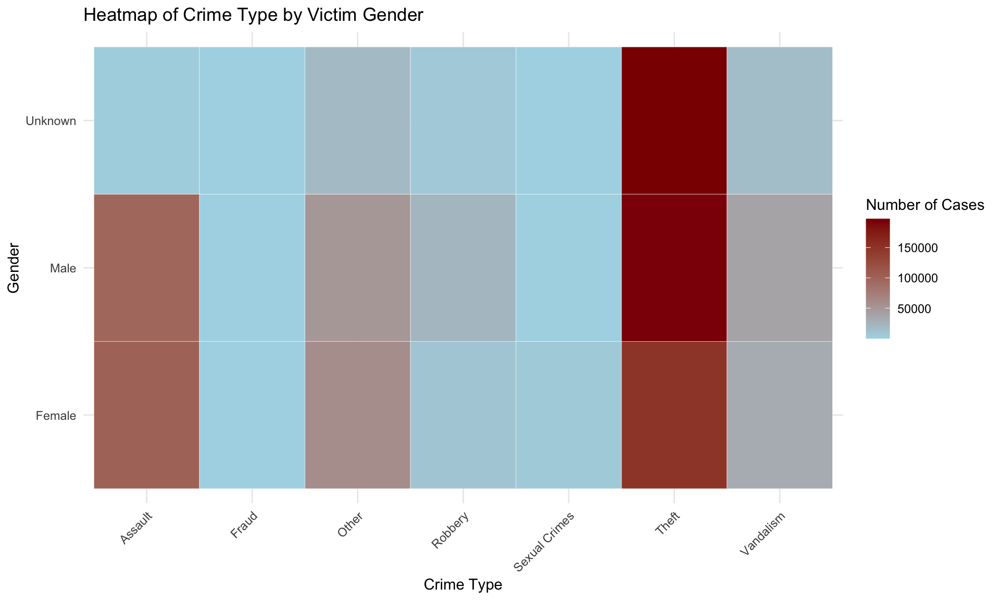
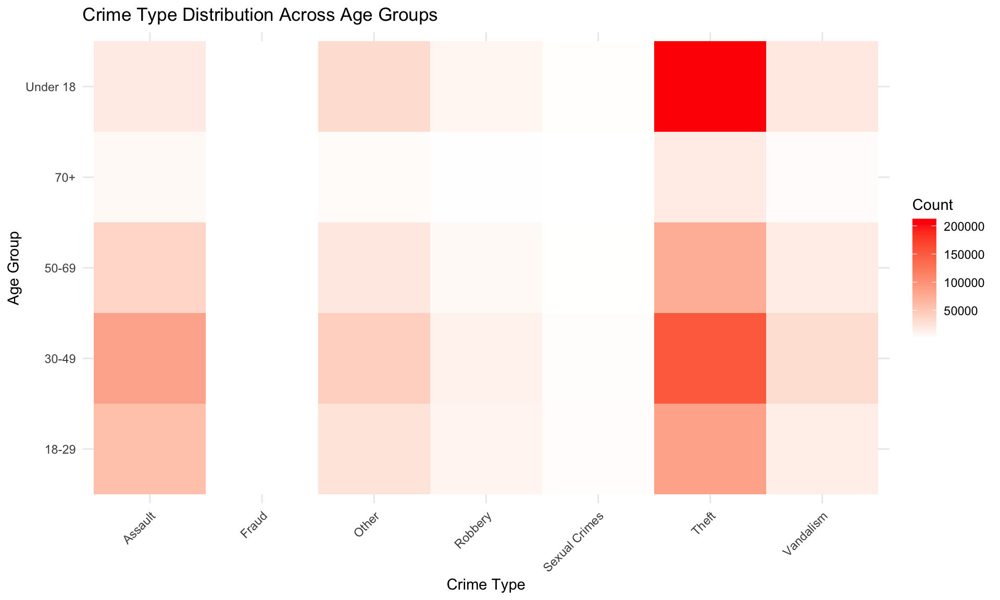
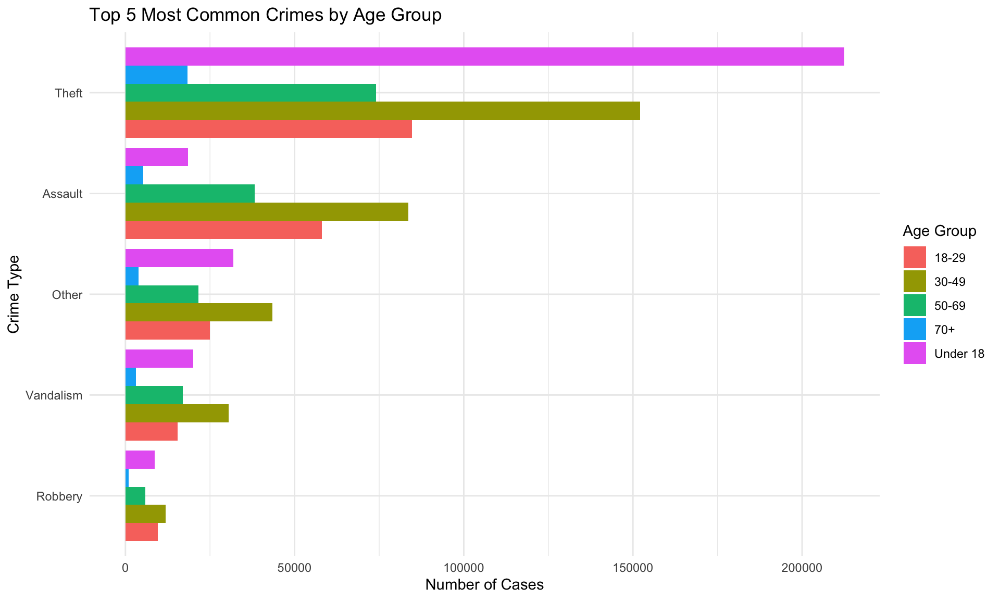
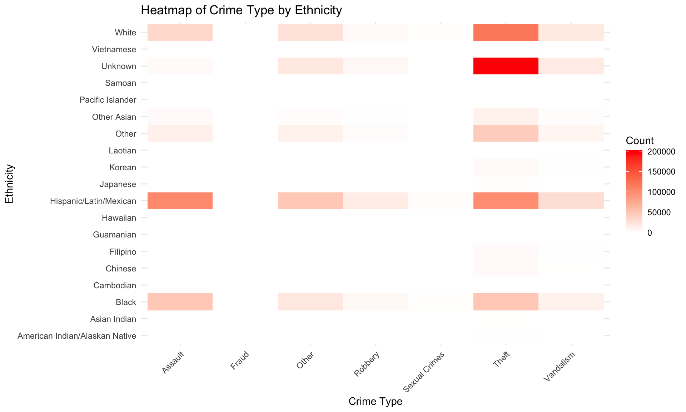

Crime is a major concern in urban areas, and understanding the patterns of victimization can help improve public safety. In this project, I am analyzing a large dataset of reported crimes from Los Angeles, which includes details about crime type, victim demographics (such as gender, age, and ethnicity), and other relevant factors. The dataset is sourced from Los Angeles Open Data and contains millions of records covering various types of offenses over several years.
The goal of my analysis is to explore how victim demographics influence the type of crime they experience. Specifically, I aim to answer the following questions:
To answer these questions, I will conduct statistical analyses, visualize trends using heatmaps and bar charts, and ultimately develop a machine learning model to predict crime risks based on victim attributes. The findings could provide insights into crime prevention efforts and help identify high-risk individuals who may need additional safety measures.
The dataset used in this analysis comes from Los Angeles Open Data, specifically the Crime Data from 2020 to Present provided by the Los Angeles Police Department (LAPD). This dataset includes incidents of crime reported in Los Angeles since 2020, covering various crime types along with victim demographics such as age, gender, and ethnicity. The data is sourced via an API request and contains records transcribed from original crime reports
To ensure data quality, I performed extensive preprocessing on the dataset using R (tidyverse, dplyr, lubridate). First, I converted date columns to Date format and standardized time values to extract the hour of occurrence. Categorical variables such as vict_sex and vict_descent were factorized for easier analysis.
Missing values in categorical columns (crm_cd_desc, status_desc, premis_desc, mocodes, vict_sex, vict_descent) were replaced with “Unknown”, while numerical columns (vict_age) were imputed with the median value after filtering out invalid values (e.g., negative ages and zeros). I also filled missing values in premis_cd using the most frequent category.
To ensure geographical accuracy, I removed records with invalid latitude and longitude values (e.g., lat=0, lon=0). Additionally, crime descriptions (crm_cd_desc) were standardized and simplified for clarity, and ethnic codes were mapped to full labels (e.g., “B” → “Black”, “H” → “Hispanic/Latin/Mexican”). Finally, I dropped high-missing-value columns such as crm_cd_2, weapon_used_cd, and cross_street, and removed records with “Other” or “Unknown” ethnicity to maintain consistency in demographic analysis.
To analyze how victim demographics influence crime type, I generated three key visualizations using ggplot2. The first compares crime types by gender, showing that men are more likely to experience violent crimes (e.g., robbery, aggravated assault), while women are more frequently victims of domestic assault and identity theft. The second visualization explores crime distribution by age group, highlighting that younger victims are more prone to physical crimes, whereas older individuals face a higher risk of financial crimes. Lastly, I examined crime type distribution by ethnicity, revealing that Black and Hispanic victims report more violent crimes, while White and Asian victims experience higher rates of identity theft and property crimes. These patterns confirm that my research question is valid, as clear demographic trends emerge in crime victimization.
Following are the three EDA graphs:



After completing the EDA, I confirmed that my hypothesis was reasonable. Next, I conducted chi-square tests for each of the three key questions to statistically verify that gender, age, and ethnicity significantly influence the types of crimes victims are most likely to experience.
Method
To answer this, crimes were grouped into seven types:
A table was created to compare victim gender across crime types. A Chi-Square Test was used to check if gender and crime type are related.
Analysis
The p-value is very small (p < 0.001), confirming a strong connection between gender and crime type.
Women are more often victims of assault, fraud, and sexual crimes. This aligns with EDA findings, where domestic assault and identity theft were more common for female victims.
Men are more often victims of theft, violent crimes, and property damage. This matches EDA results, which showed more burglary, robbery, and vandalism cases involving male victims.
Public order crimes are more frequent among female victims, supporting EDA observations on stalking and harassment. This also aligns with the trend we observed in the heatmap.
| Crime Type Distribution by Victim Gender | ||
| Victim Gender | Crime Type | Count |
|---|---|---|
| Female | Assault | 102744 |
| Male | Assault | 97646 |
| Unknown | Assault | 3272 |
| Female | Fraud | 78 |
| Male | Fraud | 79 |
| Unknown | Fraud | 46 |
| Female | Other | 58200 |
| Male | Other | 49372 |
| Unknown | Other | 18031 |
| Female | Robbery | 8788 |
| Male | Robbery | 22185 |
| Unknown | Robbery | 6064 |
| Female | Sexual Crimes | 5468 |
| Male | Sexual Crimes | 446 |
| Unknown | Sexual Crimes | 14 |
| Female | Theft | 150427 |
| Male | Theft | 193701 |
| Unknown | Theft | 197424 |
| Female | Vandalism | 31407 |
| Male | Vandalism | 38806 |
| Unknown | Vandalism | 15802 |
| Chi-Square Test Results for Gender and Crime Type | ||
| Chi-Square | DF | P-Value |
|---|---|---|
| 129,704.03 | 12 | < 2.22e-16 |

Method
Similar to the gender analysis, crimes were grouped into seven types, and age groups were defined as: - Under 18 - 18-29 - 30-49 - 50-69 - 70+
A table was created to compare crime types across different age groups. A Chi-Square Test was used to check if age group and crime type are related.
Analysis
The p-value is very small (p < 0.001), confirming a strong connection between age group and crime type.
Individuals aged 30-49 experience the highest number of crimes overall, especially theft and assault. This aligns with EDA findings, where this age group had the most reported incidents.
Younger individuals (under 18) have a higher proportion of sexual crimes, which matches EDA observations. Older individuals (70+) experience fewer crimes overall, but fraud and property damage are relatively more common among them.
Public order crimes are most frequent in the 30-49 age group, supporting EDA findings on offenses like stalking and resisting arrest. The overall trend suggests that crime type varies significantly by age group.
| Crime Type Distribution by Victim Age Group | ||
| Age Group | Crime Type | Count |
|---|---|---|
| 18-29 | Assault | 58028 |
| 30-49 | Assault | 83689 |
| 50-69 | Assault | 38152 |
| 70+ | Assault | 5332 |
| Under 18 | Assault | 18461 |
| 18-29 | Fraud | 35 |
| 30-49 | Fraud | 64 |
| 50-69 | Fraud | 38 |
| 70+ | Fraud | 12 |
| Under 18 | Fraud | 54 |
| 18-29 | Other | 24915 |
| 30-49 | Other | 43427 |
| 50-69 | Other | 21538 |
| 70+ | Other | 3836 |
| Under 18 | Other | 31887 |
| 18-29 | Robbery | 9586 |
| 30-49 | Robbery | 11947 |
| 50-69 | Robbery | 5955 |
| 70+ | Robbery | 884 |
| Under 18 | Robbery | 8665 |
| 18-29 | Sexual Crimes | 2269 |
| 30-49 | Sexual Crimes | 1831 |
| 50-69 | Sexual Crimes | 444 |
| 70+ | Sexual Crimes | 47 |
| Under 18 | Sexual Crimes | 1337 |
| 18-29 | Theft | 84669 |
| 30-49 | Theft | 152113 |
| 50-69 | Theft | 74027 |
| 70+ | Theft | 18325 |
| Under 18 | Theft | 212418 |
| 18-29 | Vandalism | 15458 |
| 30-49 | Vandalism | 30571 |
| 50-69 | Vandalism | 16905 |
| 70+ | Vandalism | 3035 |
| Under 18 | Vandalism | 20046 |
| Chi-Square Test Results for Age Group and Crime Type | ||
| Chi-Square | DF | P-Value |
|---|---|---|
| 76,196.29 | 24 | < 2.22e-16 |


Method
Similar to previous analyses, crimes were grouped into seven types, and major ethnic groups were analyzed.
A table was created to compare victim ethnicity across crime types. A Chi-Square Test was used to check if ethnicity and crime type are related.
Analysis
The p-value is very small (p < 0.001), confirming a strong connection between ethnicity and crime type.
Hispanic/Latin/Mexican and Black victims experience the highest number of reported crimes, particularly assault and theft. White victims also show a high occurrence of theft, aligning with previous EDA findings.
Asian and Pacific Islander groups, including Chinese, Japanese, and Filipino victims, have relatively fewer recorded crimes. Fraud and public order offenses are more prominent among these groups compared to other crime types.
The heatmap reveals that theft and assault are the most reported crimes across multiple ethnic groups, reinforcing the trends observed in the table. Ethnic minorities generally report fewer violent crimes than Hispanic and Black victims.
| Assault | Fraud | Other | Robbery | Sexual Crimes | Theft | Vandalism | |
|---|---|---|---|---|---|---|---|
| American Indian/Alaskan Native | 45 | 0 | 86 | 13 | 1 | 781 | 82 |
| Asian Indian | 6 | 0 | 37 | 1 | 0 | 481 | 48 |
| Black | 47321 | 34 | 20396 | 5759 | 1303 | 48635 | 11904 |
| Cambodian | 1 | 0 | 6 | 2 | 0 | 71 | 11 |
| Chinese | 17 | 1 | 293 | 4 | 2 | 3783 | 488 |
| Filipino | 91 | 0 | 225 | 8 | 4 | 3869 | 598 |
| Guamanian | 16 | 0 | 8 | 2 | 2 | 39 | 7 |
| Hawaiian | 9 | 1 | 43 | 0 | 0 | 148 | 18 |
| Hispanic/Latin/Mexican | 101883 | 44 | 47365 | 16201 | 2629 | 99960 | 27179 |
| Japanese | 14 | 0 | 83 | 2 | 0 | 1296 | 175 |
| Korean | 267 | 0 | 353 | 67 | 10 | 4564 | 677 |
| Laotian | 0 | 0 | 1 | 1 | 0 | 54 | 20 |
| Other | 12607 | 18 | 10769 | 2727 | 299 | 43281 | 7952 |
| Other Asian | 4129 | 5 | 2237 | 907 | 153 | 12160 | 1676 |
| Pacific Islander | 5 | 0 | 18 | 2 | 1 | 233 | 25 |
| Samoan | 3 | 1 | 4 | 2 | 0 | 45 | 3 |
| Unknown | 4399 | 54 | 19363 | 6528 | 32 | 202249 | 16804 |
| Vietnamese | 9 | 0 | 102 | 0 | 1 | 961 | 105 |
| White | 32840 | 45 | 24214 | 4811 | 1491 | 118942 | 18243 |
| Chi-Square Test Results for Ethnicity and Crime Type | ||
| Chi-Square | DF | P-Value |
|---|---|---|
| 176974.4 | 108 | < 2.22e-16 |
